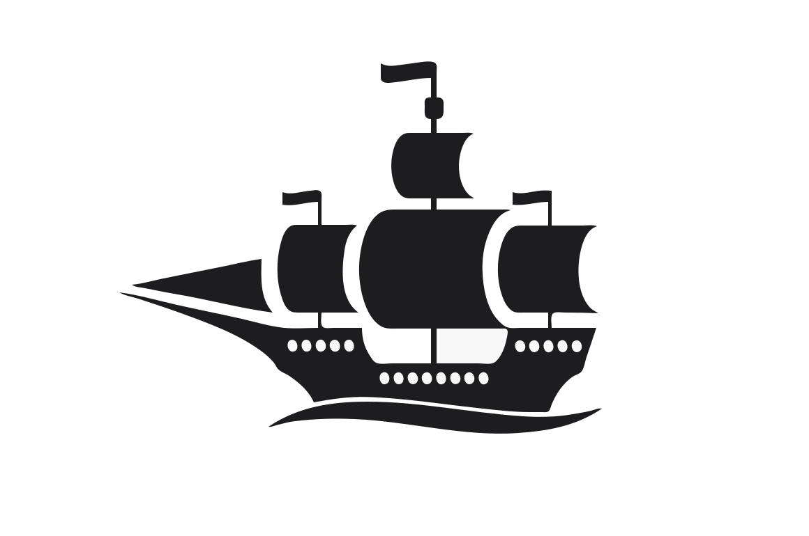

<div class="container">
  <app-heading-with-back [title]="'Uprising Map Builder'"></app-heading-with-back>
  
  <div class="d-flex flex-row">
    <button class="btn btn-primary btn-sm me-2" (click)="mapTiles.push(1)">Add Map Tile</button>
    <button class="btn btn-primary btn-sm me-2" (click)="mapTilesReverse.push(1)">Add Map Tile Reverse</button>
    <div class="dropdown me-2">
      <button class="btn btn-primary btn-sm dropdown-toggle" type="button" data-bs-toggle="dropdown" aria-expanded="false">
        Add Flag
      </button>
      <ul class="dropdown-menu">
        <li class="dropdown-item pointer" (click)="mapFlags.push('red')">Red</li>
        <li class="dropdown-item pointer" (click)="mapFlags.push('orange')">Orange</li>
        <li class="dropdown-item pointer" (click)="mapFlags.push('yellow')">Yellow</li>
        <li class="dropdown-item pointer" (click)="mapFlags.push('green')">Green</li>
      </ul>
    </div>
    <div class="dropdown me-2">
      <button class="btn btn-primary btn-sm dropdown-toggle" type="button" data-bs-toggle="dropdown" aria-expanded="false">
        Add Port
      </button>
      <ul class="dropdown-menu">
        <li class="dropdown-item pointer" (click)="mapPorts.push('blue')">Blue</li>
        <li class="dropdown-item pointer" (click)="mapPorts.push('purple')">Purple</li>
        <li class="dropdown-item pointer" (click)="mapPorts.push('teal')">Teal</li>
      </ul>
    </div>
    <button class="btn btn-primary btn-sm me-2" (click)="mapCapitols.push(1)">Add Capitol</button>
    <button class="btn btn-primary btn-sm me-2" (click)="mapMountains.push(1)">Add Mountain Region</button>
    <button class="btn btn-primary btn-sm me-2" (click)="mapWaterRegions.push(1)">Add Water Region</button>
  </div>


  <div *ngFor="let map of mapTiles">
     
  </div>

  <div *ngFor="let map of mapTilesReverse">
     
  </div>
  
  <div *ngFor="let flag of mapFlags"> 
    
  </div>

  <div *ngFor="let port of mapPorts"> 
    
  </div>

  <div *ngFor="let flag of mapCapitols"> 
    
  </div>

  <div *ngFor="let mountain of mapMountains"> 
    
  </div>

  <div *ngFor="let water of mapWaterRegions"> 
    
  </div>

</div>
